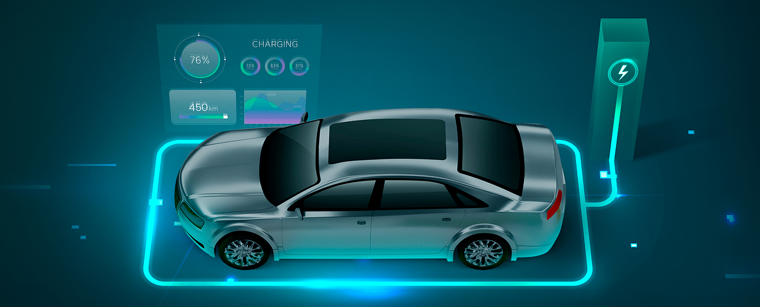
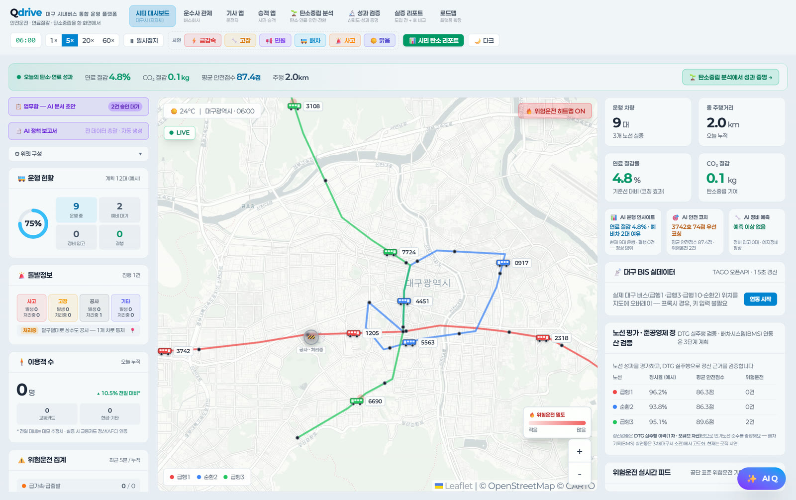
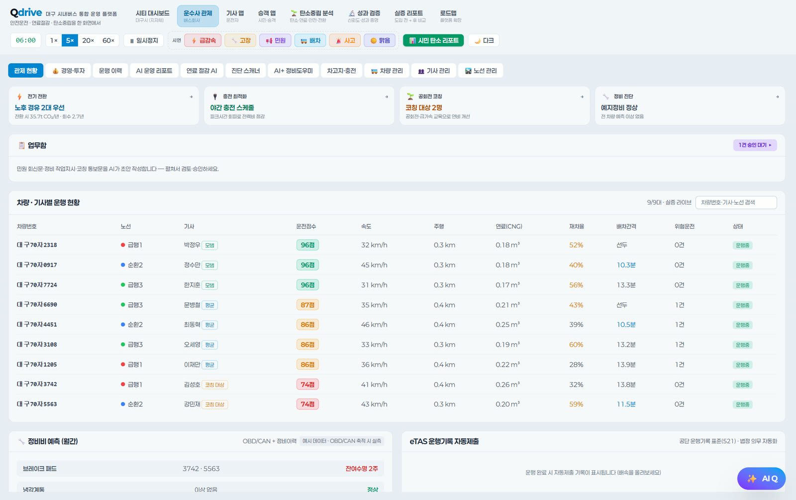
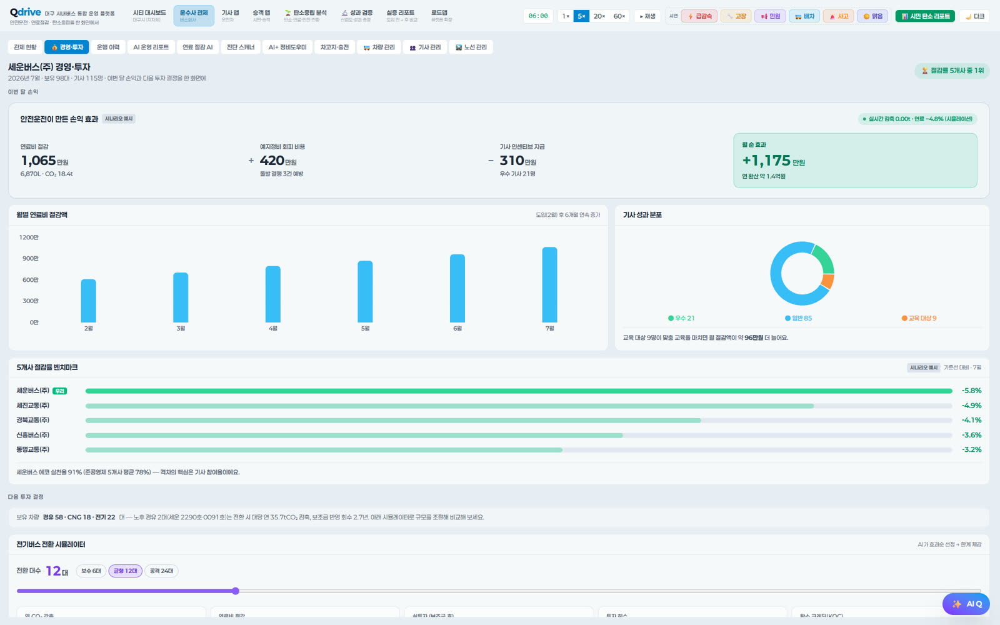

커넥티드 모빌리티 서비스
차량·사용자·관제 서버를 연결하고 실시간 이벤트와 운영 통계를 제공하는 서비스를 구축했습니다.
차량의 운행·상태·에너지 데이터를 서비스 가능한 정보로 전환합니다.관제·안전운전·충전·탄소 관리로 확장합니다.
차량 운행기록과 진단 신호로 위험운전·

디지털 클러스터·
EV 충·
주행·
도시·
운행 중인 차량의 위치와 상태를 지도에 모아 보여주고, 위험운전이 잦은 구간과 연료·

시티 대시보드 — 실증 데모 예시 화면
운행 현황을 차량·

운수회사 대시보드 — 실증 데모 예시 화면
연료비 절감과 정비 회피 비용, 기사 인센티브를 합산해 월 순효과로 보여주고, 다음 투자 결정을 같은 화면에서 판단하게 합니다.

운수회사 경영·
누적 운행을 학습해 개인별 취약 시간대와 최적 조건을 찾아내고, 무엇을 어떻게 바꾸면 되는지 행동 단위로 제시합니다.

기사 앱 리포트 — 실증 데모 예시 화면
운행기록(DTG)의 주행거리와 연비를 기준으로 배출 절감량을 산정하고, 운전 습관이 연비에 미치는 영향까지 함께 봅니다.

탄소·
같은 조건에서 AI를 쓰지 않았을 때와 견주고, 운전 그룹을 나눠 코칭 전후를 비교해 수치의 근거를 남깁니다.

성과 검증 — 실증 데모 예시 화면
운행기록장치(DTG), 차량 자가진단(OBD), 위성 정밀측위(RTK), 충전기에서 나오는 데이터를 한 가지 기준으로 모읍니다.
| 데이터 | 수집 항목 | 수집 장치 | 프로토콜· |
|---|---|---|---|
| 운행기록 | 속도· | 디지털 운행기록계(DTG) | 운행기록 표준 서식 · 시리얼/ |
| 차량 진단 | 엔진· | 차량 자가진단 장치(OBD-II) | OBD-II PID · CAN / CAN-FD |
| 위치· | 좌표· | 위성 측위 수신기(RTK 보정) | NMEA 0183 · RTCM 보정 |
| 데이터 전송 | 위 수집 데이터 전체 | LTE Cat M1 통신 모듈(자체 개발) | 메시지 통신(MQTT) · HTTPS · TLS 1.2/ |
| 충전· | 충전 세션· | 충전기 · 충전 인프라 | 충전 통신 표준(OCPP) · ISO 15118 |
| 탄소 배출 | 주행· | 위 데이터 조합(별도 장치 없음) | 온실가스 산정 기준(GHG Protocol· |
유류비 절감 (실제 운행거리 계산)
법인차·
긴급배차·
운행현황 통계보고서
운전패턴 분석 · 안전운전 지표 제공
과속·
주행·
저탄소 운전 코칭으로 배출 저감
제품 기능이 실제 현장 과제와 어떻게 연결되는지 보여주는 대표 경험입니다.
차량·사용자·관제 서버를 연결하고 실시간 이벤트와 운영 통계를 제공하는 서비스를 구축했습니다.
운행기록과 진단 신호를 바탕으로 운전 패턴과 에너지·탄소 정보를 산출합니다.
EVCP의 충전 세션·에너지 데이터와 연결해 차량과 충전 인프라를 함께 분석합니다.
차량을 직접 굴리며 안전과 비용을 함께 봐야 하는 사업에 적합합니다.
운수·
사고를 줄이는 일과 보험·
주행·
기록을 손으로 정리하느라 시간이 드는 현장